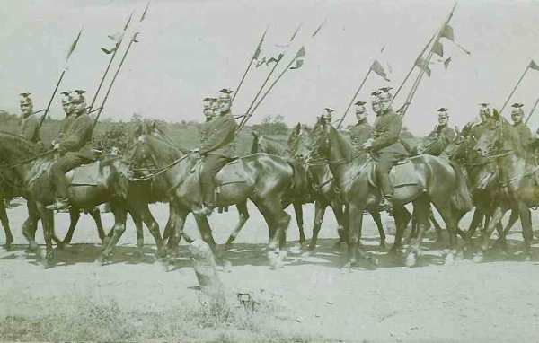

Le 13 août 1914
L’attaque française en Alsace-Lorraine est imminente, mais le mouvement général d’enveloppement des armées françaises au travers de la frontière nord débute car les forts de Liège sont tombés. L’ensemble des armées allemandes se met en branle.
G.Q.G. français
Le service des renseignements français annonce la présence de quinze C.A. allemands au nord de la ligne Verdun - Metz et de six C.A. au sud de cette ligne. Les Français ont en ce moment vingt et un C.A. et dix-sept divisions de réserve en ligne. De ces forces, dix C.A. sont au nord de Verdun et onze au sud. L’armée française dispose donc d’une grande supériorité en Lorraine, là où Joffre désire livrer la bataille décisive. Au nord de Verdun, Joffre croit n’avoir que cinq C.A. de moins que l’adversaire, infériorité compensée par les armées anglaises et belges.
L’attaque est attendue pour le 16 août. En réalité, elle sera plus lente puisque l’armée allemande sera encore sur la Gette le 18 août, grâce à la résistance de l’armée belge.
En même temps qu’il confirme à ses armées de droite l’ordre de commencer leur offensive en Lorraine, Joffre adresse à celles de gauche une instruction relative à une bataille éventuelle.
« La situation, actuellement connue, de l’ennemi donne à penser que nous n’aurons peut-être pas le temps de chercher la bataille au-delà de la Semois et de la Chiers dans de bonnes conditions. En conséquence, les dispositions ci-après seront prises dès le 14 août en vue de la bataille, qui pourrait être engagée le 15 ou le 16 :
 La troisième armée, occupant par ses divisions de réserve les positions organisées au nord et au sud de Verdun, se disposera de manière à pouvoir contre-attaquer les forces qui déboucheraient de Metz avec ses deux corps de droite ou à participer à l’attaque de la IVe armée avec les 4e et 5e corps dans la direction du nord.
La troisième armée, occupant par ses divisions de réserve les positions organisées au nord et au sud de Verdun, se disposera de manière à pouvoir contre-attaquer les forces qui déboucheraient de Metz avec ses deux corps de droite ou à participer à l’attaque de la IVe armée avec les 4e et 5e corps dans la direction du nord.
La quatrième armée poussera la tête de ses gros le 14 sur le front Sommauthe - Dun. Le 2e C.A. passe à ses ordres.
La cinquième armée aura la tête de ses gros à 8 ou 10 kilomètres en arrière de la Meuse devant Mézières et en amont. Elle attendra pour attaquer que l’ennemi ait engagé une bonne partie de ses forces sur la rive gauche. L’attaque devra être montée et, dès qu’elle sera déclenchée, menée à bonne allure.
En aval de la Meuse et jusqu’à Givet, les passages de la Meuse devront être énergiquement défendus et rompus au besoin. Le 1e corps couvrira la gauche de la 5e armée et donnera appui au corps de cavalerie qui ne passera sur la rive gauche que s’il ne peut plus rester sur la rive droite.
Les 37e et 38e divisions débarqueront du 13 au 16 dans la région de Rocroi - Hirson, à la disposition de la 5e armée.
Dans le cas où l’ennemi serait encore loin, toutes les dispositions devront être prises dès le 15 dans les 4e et 5e armées pour se porter au premier ordre sur le front Beauraing - Gedinne - Paliseul - Cugnon - Tetaigne - Quincy. »
Quant aux armées de droite :
La Ie armée (Dubail) doit attaquer vers Sarrebourg avec trois C.A., flanqués à leur droite par le 14e C.A.
La IIe armée (Castelnau) doit monter une offensive avec ses trois C.A. de droite vers Morhange. Le 9e C.A. et les divisions de réserve protégeront Nancy.
Dès que les Allemands seront en retraite, la IIe armée se redressera vers le nord pour l’attaque du front passant par Dieuze, Château-Salins."
Joffre apprend que les armées de Vilna et de Varsovie prendront l’offensive le 14 à l’aube. Par solidarité avec les alliés russes, il va prescrire une offensive à la même date.
Armée d’Alsace
Le rapport du général Pau, qui vient de prendre le commandement, dépeint ses troupes comme fort éprouvées. Le 7e C.A. et la 57e divisions se replient vers Belfort mais l’avance des Allemands sera arrêtée vers cette ville.
Pau, craignant de voir se renouveler l’insuccès de la première offensive sur Mulhouse, estime nécessaire de réunir toutes ses forces avant de se porter en avant et ce n’est pas avant le 18 qu’il compte reprendre l’offensive.
Ie armée française
Le 8e C.A. longe la Meurthe derrière la forêt de Mondon.
Le 13e C.A. borde la Meurthe entre Baccarat et Raon-l’Etape.
Le 21e C.A. est dans la région d’Etival.
Le 14e C.A. est dans la région de Saint-Dié, tenant les cols des Vosges. Il tente des attaques qui échouent sur le col de Louchpach.
Le C.C. Conneau est constitué pour exploiter un succès éventuel. Il comprend les 2e, 6e et 10e D.C.
IIe armée française
L’armée termine la réunion de la grosse masse de ses troupes dans la région au nord de Saint-Dié - Baccarat - Lunéville - Nancy. Les avant-postes ont atteint les crêtes des Vosges, les bords de la Vezouse et de la Loutre noire, affluent de la Seille.
Les unités combattantes de la IIe armée ont terminé leur débarquement soit les
16e C.A. (général Taverna) à Lunéville et Xermaménil.
15e C.A. (général Espinasse) à Haraucourt, Drouville, Serres et Courbesseaux.
20e C.A. (général Foch) le long de la Loutre noire, de Bezange-la-Grande à Moncel. Ce C.A. constitue la couverture de l’armée.
70e division de réserve (général Fayolle) sur la droite du Grand Couronné de Nancy, vers le mont Amance.
9e C.A. (général Dubois) vers le nord, dans la région de Moivron et du Mont Amance, avec des avant-postes sur la Seille.
 - 23.7 ko")
La IIe armée doit se porter vers l’est puis se redresser vers le nord et attaquer parallèlement à la frontière sur le front Dieuze - Château-Salins, vers Saarbrücken en se gardant de Metz, qui comporte une importante garnison allemande.
A Chambrey (route Nancy - Château-Salins), deux compagnies du 18e régiment bavarois sont surprises par les Français et refoulées avec de fortes pertes.
IIIe armée française
La couverture prévue est assurée dans le secteur de la Woëvre méridionale, de Pont-à-Mousson à Conflans par le 6e C.A. et la 7e D.C., et de Conflans à la vallée de la Chiers par la 4e D.I. et la 4e D.C.

Conformément à l’instruction N° 1 de Joffre, l’armée est rassemblée à l’est de la Meuse.
IVe armée française
Elle atteint Buzancy, Landres. Le corps colonial se trouve vers Dombasle-en-Argonne.
Ve armée française
Le 1e C.A. doit atteindre, le 14, la région comprise entre Philippeville et la Meuse. Ce C.A. a sa 1e division à cheval sur la Meuse au nord de Fumay et sa 2e division à l’est de Mariembourg.
La 52e division stationnée au nord de Renwez tient la Meuse de Revin à Mézières. Le 3e C.A. est entre Novion Porcien et Mézières.
Le 11e C.A. borde la Meuse de Sedan au sud de Mouzon. Ses derniers éléments sont à hauteur de Vouziers et Grandpré.
C.C. Sordet
Sordet laisse ses divisions dans leurs cantonnements. Au soir, il est informé que la région Marche - Saint-Hubert - Rochefort est occupée par une force de cavalerie allemande évaluée à deux divisions. Le renseignement est exact. Il s’agit de la 5e D.C. de la Garde et elle semble se diriger sur Dinant, par la rive nord de la Lesse.
Armée belge de campagne
Dans la région d’Eghezée, un détachement de cavalerie et d’infanterie belges surprend un bivouac de cavalerie allemande à Boneffe. Les Belges s’avancent en silence, en rampant, puis, arrivés à bonne distance, ils ouvrent le feu auquel les Allemands ne peuvent pas répliquer, ne voyant pas leurs adversaires.
A Geetz-Betz près de Halen, un détachement de 400 allemands est cerné par 200 cyclistes, qui font une cinquantaine de prisonniers.
Albert Ie modifie la disposition de l’armée, car il craint que les Allemands renouvellent leur attaque avec des effectifs plus considérables. Comme le déploiement allemand s’étend vers le nord, il faut étendre parallèlement la ligne belge dans cette direction.
La 2e division est portée à Sint-Joris-Winghe, la 3e division, éprouvée lors des combats à Liège, est mise en réserve à Leuven.
Le front de l’armée, reporté légèrement vers le nord, est le long de la ligne Chaumont-Gistoux - Roux - Sint-Margriete-Hautem - Aarschot, soit une étendue de 28 km. De droite à gauche : 5e, 1e et 2e divisions, les 3e et 6e en réserve, respectivement à Leuven et Hamme-Mille.
La 2e division doit organiser une position de résistance à 2.500 m à l’est deSint-Joris-Winghe. Le déploiement allemand face à l’armée belge s’étend à présent dans la région Kermt - Hasselt.
Aucune troupe alliée n’est signalée, l’armée belge reste complètement isolée.
La D.C. se retranche sur la Gette, de Dries à Diest.
O.H.L.
Moltke sait que douze C.A. français sont sur le front Pont-à-Mousson - Raon-l’Etape ; trois autres et deux groupes de divisions de réserve sont vers Toul - Epinal. La réunion de trois cinquièmes des forces françaises en Lorraine dénote une intention d’attaquer de ce côté.
Il pense que la bataille décisive se déroulera en Lorraine et décide que la VIe armée reculera jusqu’à la Sarre et, quand les armées françaises se seront engagées à sa suite, la Ve armée par Metz et la VIIe par les Vosges leur tomberont sur les flancs pour l’écraser.
En vue de rendre le succès certain, les six divisions et demi d’ersatz (réserve du commandant en chef) sont acheminées sur Strasbourg et sur Saarbrücken.
Ie armée allemande : début de plan Schlieffen
La traversée d’Aix-la-Chapelle commence : 320.000 hommes et leurs fourgons doivent passer par un défilé de 2 km de large.
La cavalerie allemande, qui précède largement l’infanterie, a poussé jusqu’à Diest et Tienen.
Les ordres de marche des différents C.A. sont les suivants : Le 2e C.A. doit marcher vers Lixhe et Visé ; le 4e C.A. sur Argenteau ; le 3e C.A. doit marcher sur Herstal. Toutes les localités de destination sont situées sur la Meuse.

Le Q.G. déménage de Grevenbroich à Aix-la-Chapelle.
L’armée atteint la ligne Sippenaken - Lontzen en fin de journée.
IIe armée allemande
A 17h25, l’armée fait savoir que le fort de Pontisse est tombé. Le passage de la Meuse par des masses devient possible. Il reste à réduire les forts de Liers et de Lantin. La 9e D.C. se trouve en ce moment au sud-ouest de Liège.
IIIe armée allemande
La cavalerie (5e D.C. et D.C. de la Garde) se porte en avant de Bastogne en direction de Dinant. Le gros de l’armée se met en marche de la pointe nord du Grand-Duché vers l’Ourthe. Elle ne doit pas dépasser l’Ourthe jusqu’à nouvel ordre.

IVe armée allemande
Occupe Neufchâteau dans les ardennes belges.
VIe armée allemande
Rupprecht envisage la possibilité d’un repli car une attaque française de grand style est possible en Lorraine.